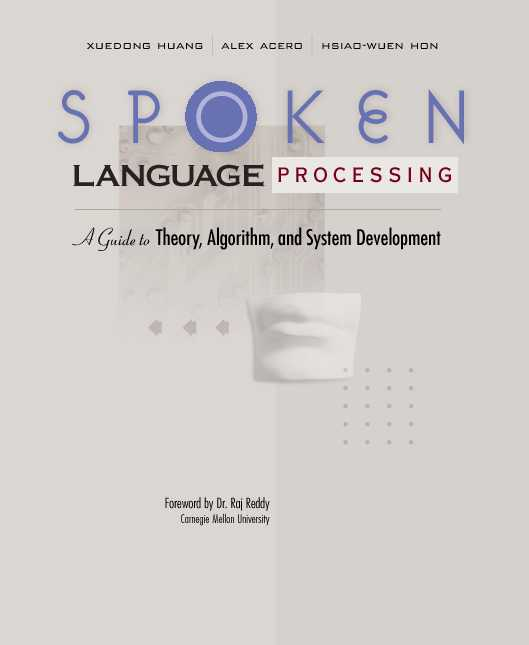

Spoken
Language Processing:
A
Guide to Theory, Algorithm, and System Development
X. Huang, A. Acero, H. Hon
Prentice Hall, 2001
Table of Contents
Foreword by Raj Reddy
Preface
1. INTRODUCTION
PART I: INTRODUCTION
2. SPOKEN LANGUAGE STRUCTURE
3. PROBABILITY AND INFORMATION THEORY
4. PATTERN RECOGNITION
PART II: SPEECH PROCESSING
5. DIGITAL SIGNAL PROCESSING
6. SPEECH SIGNAL REPRESENTATIONS
7. SPEECH CODING
PART III: SPEECH RECOGNITION
8. HIDDEN MARKOV MODELS
9. ACOUSTIC MODELING
10. ENVIRONMENTAL ROBUSTNESS
11. LANGUAGE MODELING
12. BASIC SEARCH ALGORITHMS
13. LARGE VOCABULARY SEARCH ALGORITHMS
PART IV: TEXT-TO-SPEECH SYSTEMS
14. TEXT AND PHONETIC ANALYSIS
15. PROSODY
16. SPEECH SYNTHESIS
PART V: SPOKEN LANGUAGE SYSTEMS
17. SPOKEN LANGUAGE UNDERSTANDING
18. APPLICATIONS AND USER INTERFACES